Mekânsal Yapı ve Makroform
Arazi deseni, kıyı bandı ve iç akslar boyunca büyüme, mahalle yapısı, kırsal alanlar, otoyolun biçimlendirdiği morfoloji ve sosyal donatılar
Genel Arazi Deseni
Yerleşim, tarım ve doğal alanların birlikte oluşturduğu desen · Mevcut kullanım ile plan kararları ayrı tutuldu
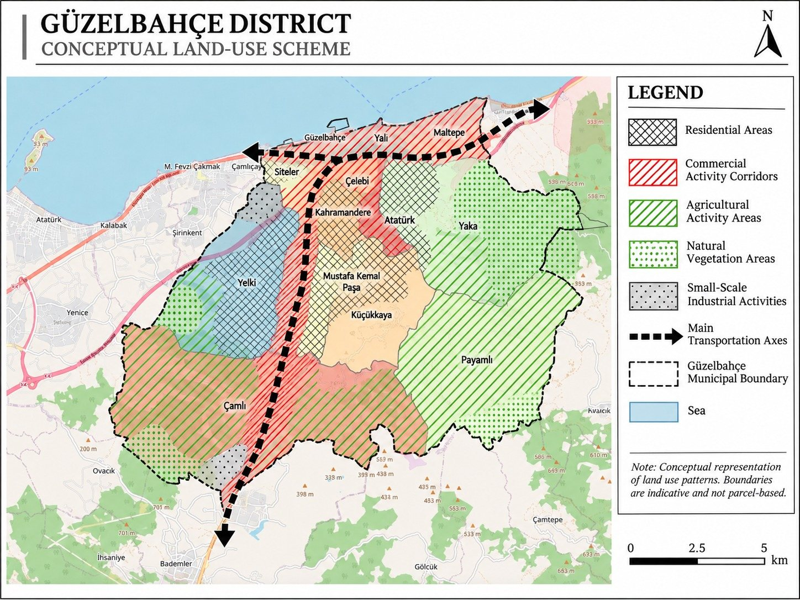
Araştırma grubu. Kavramsal şemadır; sınırlar gösterge niteliğindedir ve parsel tabanlı değildir.
Yarımada Stratejisinde Arazi Kategorileri (ha)
İZKA (2014), s. 90, Tablo 2.31; paylar 8.560,76 ha toplamına göre hesap. 5403 sayılı Kanun kapsamındaki arazi, fiilen işlenen tarım alanıyla eş tutulmamalıdır.
Arazi Envanteri, Aralık 2025
İzmir İl Tarım ve Orman Müdürlüğü kuruluş brifingi; paylar 8.256 ha ilçe toplamına göre hesap. İki kaynak farklı toplam alan ve sınıflama kullandığından aradaki farklar arazi kaybı olarak yorumlanmadı.
Belediye Kayıtları, 2025
| Gösterge | Değer | Yorum |
|---|---|---|
| Yeni yapı ruhsatı | 156 | Ruhsat; tamamlanmış bina değil |
| Yapı kullanma izni | 214 | Belge; konut sayısı değil |
| Mecliste incelenen plan | 15 | Plan değişikliği |
Güzelbahçe Belediyesi 2025 faaliyet raporu. Çamlı uygulama imar planı, İBB Meclisi'nin 16 Ağustos 2024 tarihli 830 sayılı kararıyla değişikliklerle onaylandı.
Kıyıdan İç Kesime Dört Karakter Alanı
Kıyı ve mevcut kentsel doku
Konut, hizmet ve ticaret
Yelki–Yaka geçiş kuşağı
Yeni konut gelişimi ve karma kullanım
Çamlı–Payamlı–Küçükkaya
Kırsal yerleşim ve üretim
Eğimli iç alanlar
Doğal bitki örtüsü ve zeytinlikler
Araştırma grubunun analitik sentezi; kesin mahalle, imar ya da mülkiyet sınırı değildir.
Kentsel Makroform, 2002–2026
Kıyı bandı boyunca süreklilik, Yelki ve Kahramandere çevresinde iç kesime yayılan parçalı büyüme
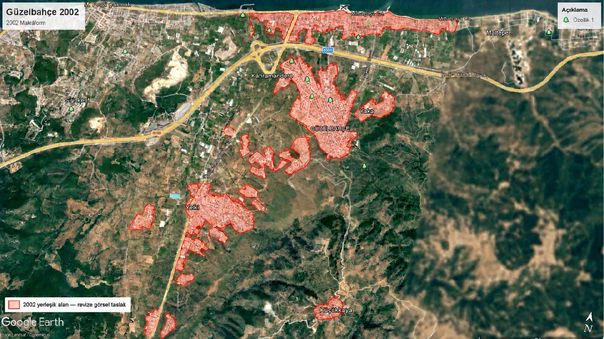
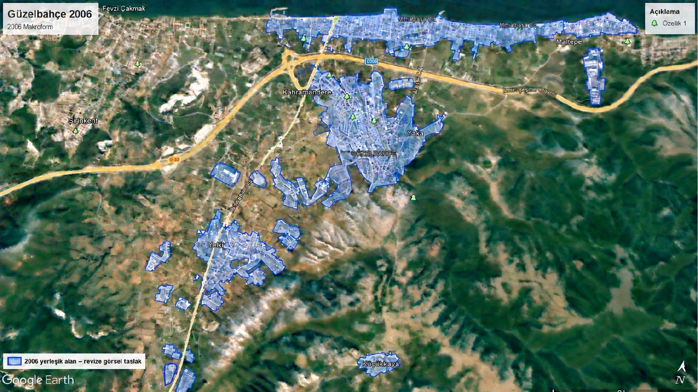
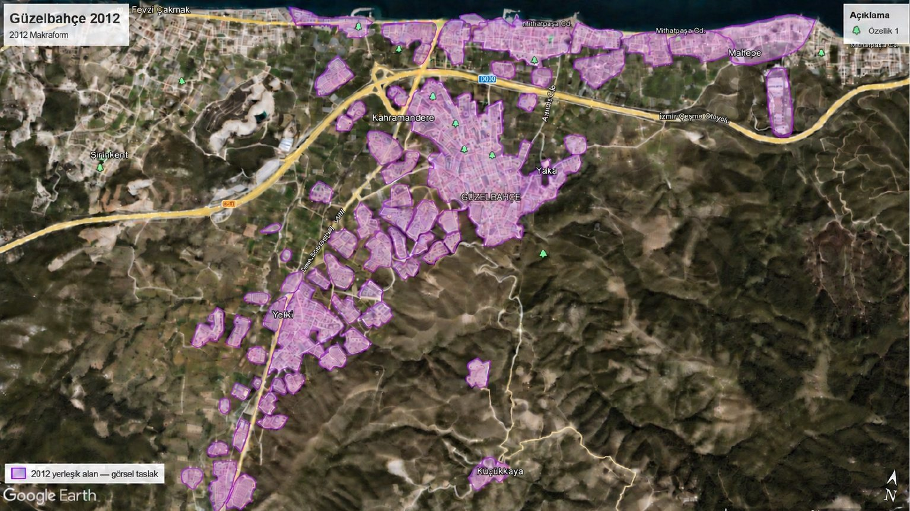
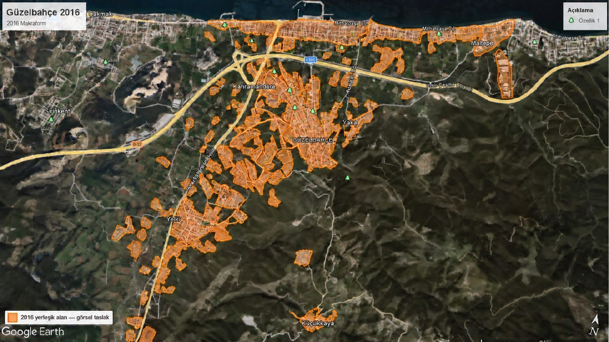
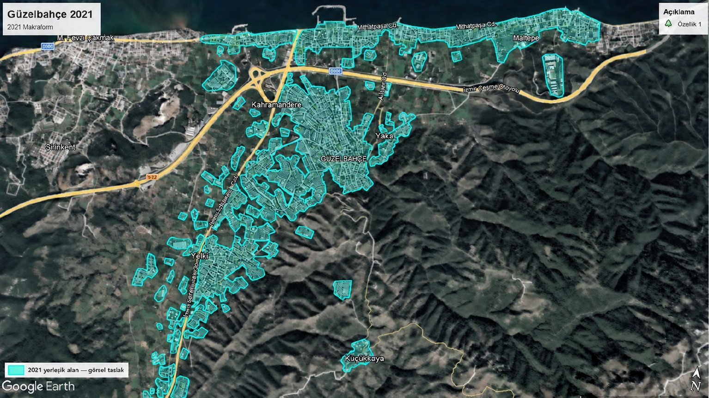
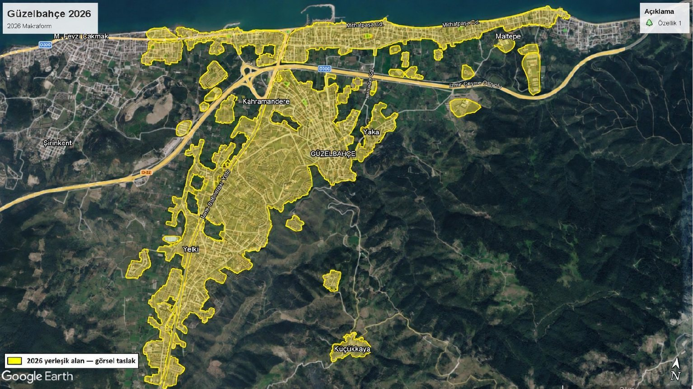
2002Araştırma grubu; Google Earth görüntülerinden görsel yorum. Kadastral ya da kesin arazi kullanım sınırı değildir; görüntü tarihleri, ölçek ve sayısallaştırma tutarlılığı doğrulanmadan alan (ha) ve büyüme hızı hesaplanmadı.
Kentsel Doku ve Parçalanma, 1963–2005
Coşkun Hepcan ve diğ. (2015), s. 359, Tablo 5. Lekeler arazi örtüsü lekeleridir, kadastro parseli değildir. Makideki azalma tümüyle kentleşmeye dönüştüğünü göstermez.
Tarım ve Zeytinlik Payları (%)
Akademik çalışmanın sınıflamasındaki paylar (Coşkun Hepcan ve diğ., 2015); 2026 kullanımı ya da yeni ölçüm değildir.
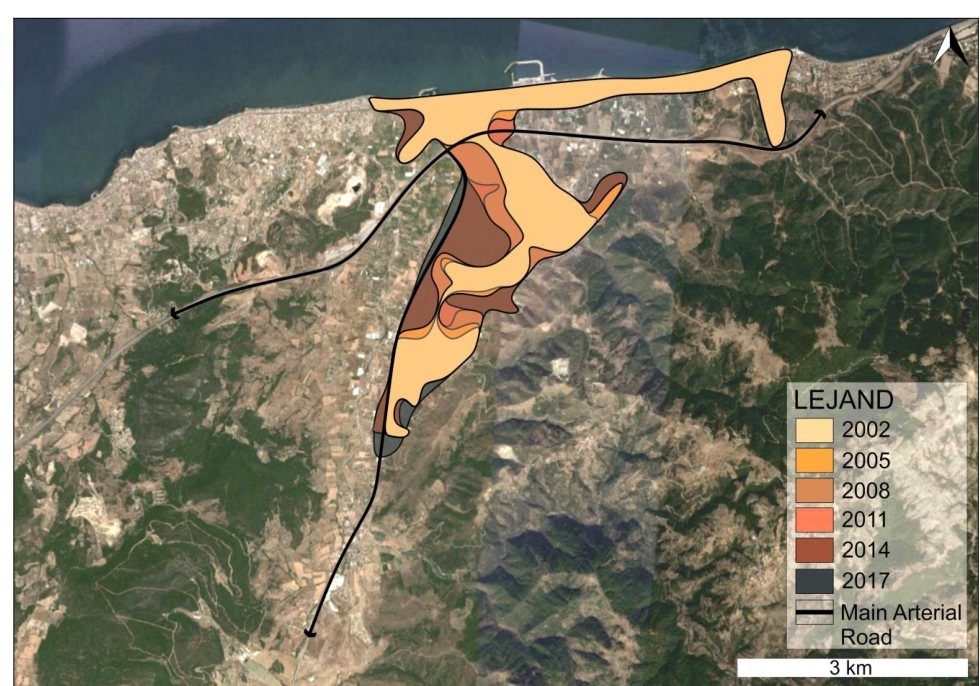
Partigöç ve Tarhan (2018), Şekil 6, s. 409; doi:10.5194/isprs-archives-XLII-3-W4-405-2018; CC BY 4.0. Kıyı, Yelki, Kahramandere, Yaka ve Maltepe çevresinde gelişim.
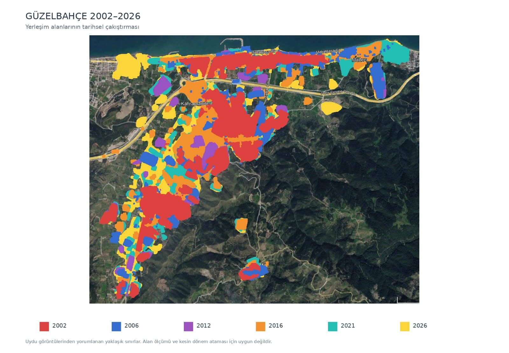
Araştırma grubu. Renkler gözlem yıllarını ayırır; çakışmalar kesin yapım tarihini ya da yıllık alan değişimini göstermez.
Mahalle Yapısı
12 mahalle: 8 seyrek kentsel, 4 yakın kırsal (İZKA, 2021) · Mahalle nüfusları ve plan notlarındaki parsel koşulları
Mahallelere Göre Nüfus, 2023
Güzelbahçe Belediyesi SAGEP raporu, s. 31–32; toplam 38.044 kişi. Renkler İZKA (2021) kentsel–kırsal sınıflamasını gösterir.
Kentsel ve Kırsal Mahalleler
Seyrek kentsel (8)
Yakın kırsal (4)
İZKA (2021), s. 103. Yoğun kentsel ve uzak kırsal sınıfta mahalle yok. Çalışmanın %92 kentleşme oranı nüfus sınıflamasına dayanır, yapılaşmış alan payı değildir.
Plan Notlarında En Küçük Parsel Büyüklüğü (m²)
Güzelbahçe Belediyesi genel plan lejant notları, s. 4, 12–13. Parsel büyüklüğü tek başına yoğunluğu belirlemez; TAKS, KAKS ve diğer koşullar da gerekir.
Kırsal Plan Alanlarında Yapılaşma Koşulları
Mevzii imar planı notları. İlk set ikincinin 3 katıdır hesap; bu fark gözlenen yoğunluğu değil, planlanan koşulları gösterir.
Kırsal Alanların Mekânsal Yapısı
Yerleşim dokusu, üretim alanları ve fiziksel kısıtlar · Zeytin, mandalina, kesme çiçek ve hayvancılık
Plan Notlarındaki Fiziksel Kısıtlar
| Plan alanı | Belgelenen koşul | Mekânsal sonuç |
|---|---|---|
| Çamlı 101–104 adalar | Kocadere yatağı korunur; yapı üst şevden en az 5 m çekilir | Dere koridoru yapı alanını sınırlar |
| Çamlı 185–186 parseller | Enerji hattı güvenlik ve salınım koridorunda yapı yapılmaz | Doğrusal altyapı yapı yerini kısıtlar |
| Küçükkaya 374 parsel | Çamlı Barajı havzası ve kısa mesafeli koruma alanıyla ilişki | Su koruma koşulları kullanımı sınırlar |
Güzelbahçe Belediyesi mevzii imar planı notları. Koşullar yalnızca adı geçen plan alanlarına özgüdür; ilçe geneli koruma sınırı değildir. Hayvan ve kooperatif sayıları: İzmir İl Tarım ve Orman Müdürlüğü (2025).
Otoyol, Sıçramalı Gelişme ve Kapalı Siteler
İzmir–Çeşme Otoyolu makroformu biçimlendiren temel "mekânsal eşik" · Araştırma grubunun morfoloji analizi
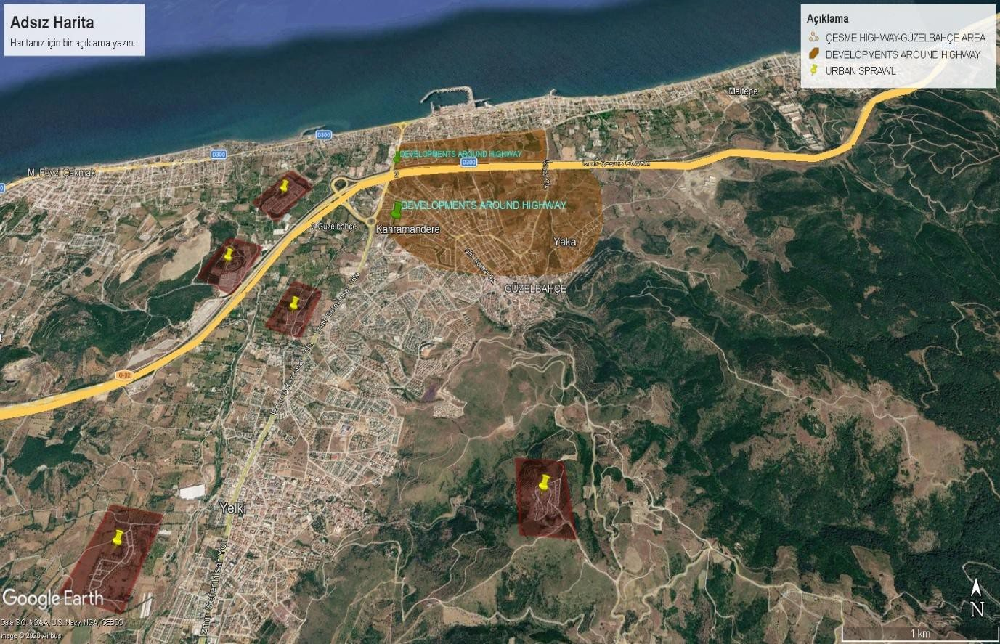
Araştırma grubu; Google Earth. Sarı: otoyol; turuncu: otoyol çevresindeki gelişme; kırmızı: kentsel saçaklanma.
Morfolojinin Üç Örüntüsü
Düğüm odaklı yoğunlaşma
Kahramandere ve Yaka, otoyol bağlantısına doğrudan erişim nedeniyle lüks konut, özel okul ve ticaretin toplandığı yeni bir alt merkeze dönüştü.
Sıçramalı gelişme
Güney ve güneybatı yamaçlarında aradaki orman ve tarım alanlarını atlayan parçalı yerleşimler; otomobil bağımlılığını ve altyapı maliyetini artırır, ekolojik koridorları böler.
Kapalı siteler
Yelki çevresinde duvar, giriş kontrolü ve özel güvenlikle kentten ayrılan "adacıklar": fiziksel ve sosyo-mekânsal ayrışma.
Harvey, Şengül, Çilingir ile Velibeyoğlu ve Saygı (2006) çerçevesinde araştırma grubunun yorumu.
Sosyal Donatı Alanları
Eğitim ve sağlık tesisleri, plan koşulları ve geniş alan gerektiren kullanımlar
Okul Türleri: Resmî ve Özel
Güzelbahçe İlçe Millî Eğitim Müdürlüğü 2024–2028 Stratejik Planı, Tablo 11–12; anasınıfları (7 resmî, 10 özel) hariç.
Listelenen Kurumlarda Öğretmen Sayısı
19 resmî ve 29 özel kurum; toplam 1.524 öğretmen hesap. Kaynak: İlçe MEM kurum ve öğretmen envanteri.
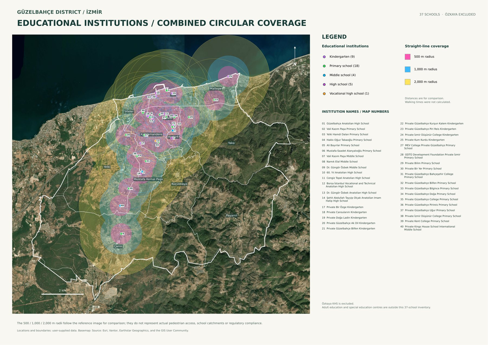
Araştırma grubu; 37 okul. İlkokul 500 m, ortaokul 1.000 m, lise 2.500 m yarıçap. Şematik düz çizgi kapsamadır; gerçek yürüme erişimini ya da yolculuk süresini ölçmez.
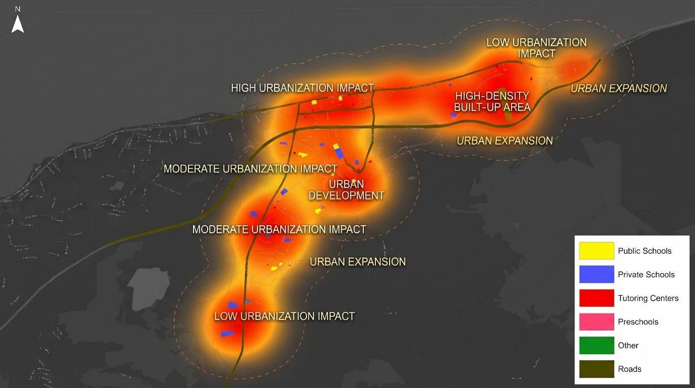
Araştırma grubu; Google Maps, İlçe MEM ve Endeksa. Eğitim tesisleri Kahramandere ve Yaka gibi otoyol bağlantılarına yakın kesimlerde kümeleniyor.
Kamu Sağlık Personeli (65)
Güzelbahçe Belediyesi SAGEP raporu, s. 43–44 (kurumsal kadro tablosu).
Semt Polikliniği
Poliklinikte yataklı servis yok; acil birimi ve geleneksel ve tamamlayıcı tıp (GETAT) birimi var. Hastalar Güzelbahçe, Urla ve İzmir'in diğer kesimlerinden geliyor. Rapordaki sevk şemasına göre ileri bakım için Urla Devlet Hastanesi ve Dokuz Eylül Üniversitesi Hastanesi'ne yönlendiriliyor.
Geniş Alan Gerektiren Kullanımlar ve Plan Koşulları
Askerî eğitim kampüsü
Döneme göre ortalama 1.000 öğrenci ve 100 personel. Öğrenciler izinlerde ilçe merkezindeki esnafı kullanıyor; tören dönemlerinde aileler yerel otellerde kalıyor.
İzmir Ekonomi Üniversitesi
Yaka'da 22 hektarlık Güzelbahçe kampüsü yapım aşamasında. Ticarete ve hizmetlere etkisi bugün için bir beklentidir.
Eğitim ve kamu tesisleri
Plan notlarında en çok 2 kat.
Sağlık ve kamu tesisleri
KAKS en çok 0,50; yapı yüksekliği en çok 6,80 m. Yeşil alanlardaki kapalı kullanımlarda KAKS 0,01.
Kurum görüşmesi ve saha gözlemleri (2026), Güzelbahçe genel plan lejant notları. Akşam zirvesinde Güzelbahçe–Narlıdere–Fahrettin Altay yönünde tek şeritli ana yol nedeniyle sık sık yoğunluk yaşanıyor.
Veri Kaynağı: Araştırma grubunun "Residential, Employment and Production Areas · Spatial Structure" (Makroform 2026) ve "Spatial Formation, Urban History and Morphology" raporları · İZKA (2014, 2021, 2023) · Coşkun Hepcan ve diğ. (2015) · Partigöç ve Tarhan (2018) · İzmir İl Tarım ve Orman Müdürlüğü (2025) · Güzelbahçe Belediyesi 2025 faaliyet raporu, SAGEP raporu ve plan notları · İBB Meclis kararları · Güzelbahçe İlçe MEM 2024–2028 Stratejik Planı · Google Earth